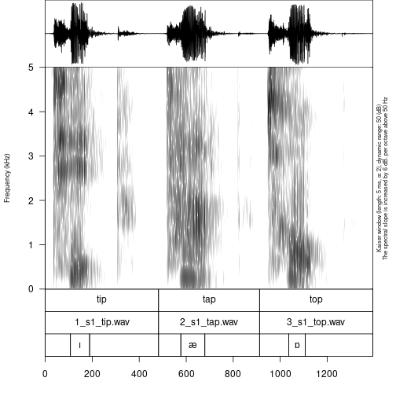
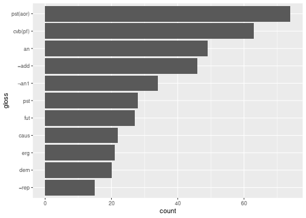

Manipulating `phonfieldwork` data with `tidyverse`
George Moroz, NRU HSE Linguistic Convergence Laboratory
2023-02-16
Source:vignettes/data_manipulation_with_tidyverse.Rmd
data_manipulation_with_tidyverse.RmdIntroduction
The output tables from the phonfieldwork’s functions (e. g. textgrid_to_df(), eaf_to_df(), exb_to_df(), flextext_to_df() etc.) is hard to interpret since each row is a separate morpheme/observation or aother unit. In order to merge it to a more common representation we will use tidyverse functions (mainly dplyr and tidyr packages). This text will help you to achieve some results, but it is better to spend some times learning data manipulation with dplyr and tidyr.
If you do not have tidyverse installed run:
install.packages("tidyverse")Let’s load the package:
.TextGrid, .eaf, .exb formats
The standard sound annotation formats consisnt of tiers with parallel annotation:

If we convert this file to R we will achieve something like this:
textgrid_to_df("s1/s1_all.TextGrid")
#> id time_start time_end content tier tier_name source
#> 1 1 0.0000000 0.4821542 tip 1 labels s1_all.TextGrid
#> 4 1 0.0000000 0.4821542 1_s1_tip.wav 2 backup labels s1_all.TextGrid
#> 7 1 0.0000000 0.1072426 3 s1_all.TextGrid
#> 8 2 0.1072426 0.1887230 ı 3 s1_all.TextGrid
#> 9 3 0.1887230 0.4821542 3 s1_all.TextGrid
#> 2 2 0.4821542 0.9120635 tap 1 labels s1_all.TextGrid
#> 5 2 0.4821542 0.9120635 2_s1_tap.wav 2 backup labels s1_all.TextGrid
#> 10 4 0.4821542 0.5770552 3 s1_all.TextGrid
#> 11 5 0.5770552 0.6793392 æ 3 s1_all.TextGrid
#> 12 6 0.6793392 0.9120635 3 s1_all.TextGrid
#> 3 3 0.9120635 1.3942177 top 1 labels s1_all.TextGrid
#> 6 3 0.9120635 1.3942177 3_s1_top.wav 2 backup labels s1_all.TextGrid
#> 13 7 0.9120635 1.0364661 3 s1_all.TextGrid
#> 14 8 1.0364661 1.1066780 ɒ 3 s1_all.TextGrid
#> 15 9 1.1066780 1.3942177 3 s1_all.TextGridAs we see this table has a long format structure: each observation has its own row. We can select the first two rows with the filter() function, remove all unnecessary columns with the select() function and spread everything in a table with the pivot_wider() function:
textgrid_to_df("s1/s1_all.TextGrid") %>%
filter(tier %in% 1:2) %>%
select(-time_start, -time_end, -tier_name) %>%
pivot_wider(names_from = tier, values_from = content)
#> # A tibble: 3 × 4
#> id source `1` `2`
#> <dbl> <chr> <chr> <chr>
#> 1 1 s1_all.TextGrid tip 1_s1_tip.wav
#> 2 2 s1_all.TextGrid tap 2_s1_tap.wav
#> 3 3 s1_all.TextGrid top 3_s1_top.wav.flextext format
Imagine that we obtained the first result from flextext_to_df():
df <- flextext_to_df("files/zilo_test.flextext")
#> It can take some time for big files...
head(df)
#> p_id s_id w_id txt cf hn gls msa free_trans
#> 1 1 1 1 б- б- 1 an Inflects any category Жил-был (у Гъули?) петух.
#> 2 1 1 1 ик1 ик1 1 быть гл Жил-был (у Гъули?) петух.
#> 3 1 1 1 -о -о 1 pst гл:Past Жил-был (у Гъули?) петух.
#> 4 1 1 1 -й -й 5 cvb(pf) гл:Converb/Perfect Жил-был (у Гъули?) петух.
#> 5 1 1 1 =гъоди =гъоди 1 =rep част Жил-был (у Гъули?) петух.
#> 6 1 1 2 б- б- 1 an Inflects any category Жил-был (у Гъули?) петух.
#> text_title morph
#> 1 2017.04 Fairytale about the rooster d7f713db-e8cf-11d3-9764-00c04f186933
#> 2 2017.04 Fairytale about the rooster d7f713e8-e8cf-11d3-9764-00c04f186933
#> 3 2017.04 Fairytale about the rooster d7f713dd-e8cf-11d3-9764-00c04f186933
#> 4 2017.04 Fairytale about the rooster d7f713dd-e8cf-11d3-9764-00c04f186933
#> 5 2017.04 Fairytale about the rooster d7f713e1-e8cf-11d3-9764-00c04f186933
#> 6 2017.04 Fairytale about the rooster d7f713db-e8cf-11d3-9764-00c04f186933
#> word phrase
#> 1 efafb420-e203-4685-9be2-1b7810f10a70 1cbadc4f-4051-4783-a0d8-bfeee2d2fb13
#> 2 efafb420-e203-4685-9be2-1b7810f10a70 1cbadc4f-4051-4783-a0d8-bfeee2d2fb13
#> 3 efafb420-e203-4685-9be2-1b7810f10a70 1cbadc4f-4051-4783-a0d8-bfeee2d2fb13
#> 4 efafb420-e203-4685-9be2-1b7810f10a70 1cbadc4f-4051-4783-a0d8-bfeee2d2fb13
#> 5 efafb420-e203-4685-9be2-1b7810f10a70 1cbadc4f-4051-4783-a0d8-bfeee2d2fb13
#> 6 c76d26b7-b84a-42a8-ba34-38e712b1db13 1cbadc4f-4051-4783-a0d8-bfeee2d2fb13
#> paragraph text
#> 1 0c9ffe63-b4bf-4af3-a1da-f68567e03513 f08dd466-fca6-4597-925c-c46309387ef7
#> 2 0c9ffe63-b4bf-4af3-a1da-f68567e03513 f08dd466-fca6-4597-925c-c46309387ef7
#> 3 0c9ffe63-b4bf-4af3-a1da-f68567e03513 f08dd466-fca6-4597-925c-c46309387ef7
#> 4 0c9ffe63-b4bf-4af3-a1da-f68567e03513 f08dd466-fca6-4597-925c-c46309387ef7
#> 5 0c9ffe63-b4bf-4af3-a1da-f68567e03513 f08dd466-fca6-4597-925c-c46309387ef7
#> 6 0c9ffe63-b4bf-4af3-a1da-f68567e03513 f08dd466-fca6-4597-925c-c46309387ef7As we can see from df print there are three indices in the dataset: p_id – paragraph id, s_id – sentence id and w_id – word id.
df %>%
filter(free_trans != "") %>%
select(p_id, s_id, w_id, txt, gls, free_trans) %>%
group_by(p_id, s_id, free_trans, w_id) %>%
summarise(txt = str_c(txt, collapse = ""),
gls = str_c(gls, collapse = "-"))
#> `summarise()` has grouped output by 'p_id', 's_id', 'free_trans'. You can override using
#> the `.groups` argument.
#> # A tibble: 136 × 6
#> # Groups: p_id, s_id, free_trans [19]
#> p_id s_id free_trans w_id txt gls
#> <dbl> <dbl> <chr> <dbl> <chr> <chr>
#> 1 1 1 Жил-был (у Гъули?) петух. 1 б-ик1-о-й=гъоди "an-быть-pst-cvb(pf)…
#> 2 1 1 Жил-был (у Гъули?) петух. 2 б--о-ч1игу=гъоди "an--pst-neg.cvb-=re…
#> 3 1 1 Жил-был (у Гъули?) петух. 3 Гъули-б "Гъули-an(gen)"
#> 4 1 1 Жил-был (у Гъули?) петух. 4 х1елеко "петух"
#> 5 1 1 Жил-был (у Гъули?) петух. 5 . ""
#> 6 2 2 Он грелся на улице(?). 6 къват1и-ла=гъоди "улица-in-=rep"
#> 7 2 2 Он грелся на улице(?). 7 б-ик1-о-j "an-быть-pst-cvb(pf)"
#> 8 2 2 Он грелся на улице(?). 8 букьир-ъа "Букир-sup"
#> 9 2 2 Он грелся на улице(?). 9 . ""
#> 10 2 3 [Ему в ногу] воткнулась колючка. 10 къинни-й=гъоди "втыкаться-cvb(pf)-=…
#> # … with 126 more rowsThe first filter() removes some garbage rows that are present in our example flextext. The select() function selects only six important columns from 15 presented in the dataset. The group_by() and summarise() merge all text from txt variable and all glosses from gls variable together. Pipe operater %>% make it possible to pass the result from the previous funstion as an input to the following one.
So now we can use the same code in order to merge everything into sentences:
df %>%
filter(free_trans != "") %>%
select(p_id, s_id, w_id, txt, gls, free_trans) %>%
group_by(p_id, s_id, free_trans, w_id) %>%
summarise(txt = str_c(txt, collapse = ""),
gls = str_c(gls, collapse = "-")) %>%
group_by(p_id, s_id, free_trans) %>%
summarise(txt = str_c(txt, collapse = " "),
gls = str_c(gls, collapse = " "))
#> `summarise()` has grouped output by 'p_id', 's_id', 'free_trans'. You can override using
#> the `.groups` argument.
#> `summarise()` has grouped output by 'p_id', 's_id'. You can override using the `.groups`
#> argument.
#> # A tibble: 19 × 5
#> # Groups: p_id, s_id [19]
#> p_id s_id free_trans txt gls
#> <dbl> <dbl> <chr> <chr> <chr>
#> 1 1 1 "Жил-был (у Гъули?) петух." б-ик… "an-…
#> 2 2 2 "Он грелся на улице(?)." къва… "ули…
#> 3 2 3 "[Ему в ногу] воткнулась колючка." къин… "вты…
#> 4 3 4 "Когда колючка воткнулась, [он] ушел к Бихтаю." ццан… "кол…
#> 5 4 5 "Гъули не обнаружил дома Бихтай, дома ее нет, из себя не вынул и… бихь… "Бих…
#> 6 5 6 "Оттуда пошел к Умалаю, " б-uʔ… "an-…
#> 7 6 7 "Оттуда петух пошел к Патимат." х1ел… "пет…
#> 8 8 10 "Оттуда [петух] пошел к Ханичай." гье-… "dem…
#> 9 9 11 "Иди к Хурмат, ..." хъан… "Хан…
#> 10 10 12 "Когда дошёл до двора Хурмат, из окна появился мальчик, сказал:" рул1… "гов…
#> 11 11 13 "Три дня не ели, мы с ней не зная, сказал он." рул1… "гов…
#> 12 12 14 "Оттуда он ушёл и дошёл до Айшат Исмаиловой и её не обнаружив, о… гье-… "dem…
#> 13 13 15 "Захраил …?" й--и… "f--…
#> 14 14 16 "И он пошел в село. Захраил сказала, что колючка воткнулась в пе… б-ук… "an-…
#> 15 15 17 "Оттуда снизу вверх к Исрапилу ..." гьег… "там…
#> 16 16 18 "Шли-шли и пришли к Гаджи." гье-… "dem…
#> 17 17 19 "Они поссорились (?) и прогнали (?) петуха." й-ей… "f-р…
#> 18 18 20 "Когда закончили ссориться, [пошли?] к Забиту." джид… "дел…
#> 19 19 21 "На воротах Забита петух обнаружил замок и пошел к Зумайрат." х1ел… "пет…It is also very easy to get some simple statistics from the data:
df %>%
filter(gls != "") %>%
count(gls) %>%
top_n(6)
#> Selecting by n
#> gls n
#> 1 =add 46
#> 2 an 49
#> 3 cvb(pf) 63
#> 4 pst 28
#> 5 pst(aor) 74
#> 6 ¬an1 34Here with the filter() function we remove all empty glosses, then we calculate and sort them according to frequency, and in the end we take top six glosses with the top_n() function. We can even visualis it with the ggplot2 package:
df %>%
filter(gls != "") %>%
count(gls) %>%
top_n(11) %>%
ggplot(aes(n, fct_reorder(gls, n)))+
geom_col()+
labs(x = "count", y = "gloss")
#> Selecting by n